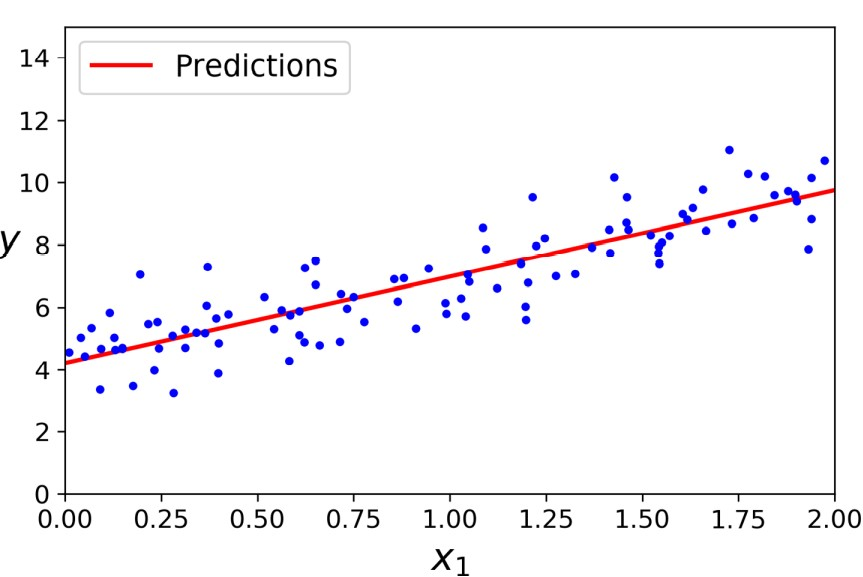
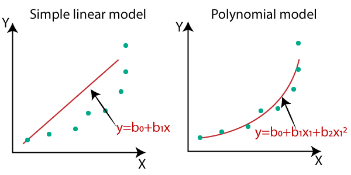
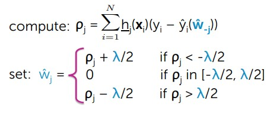
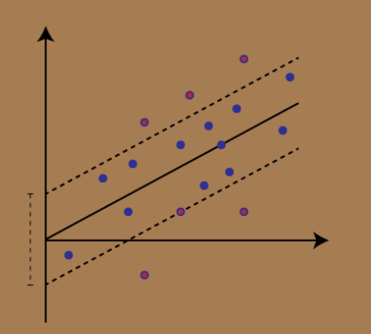
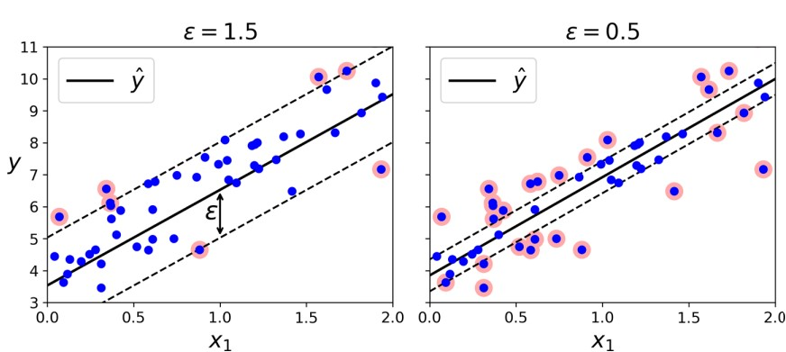
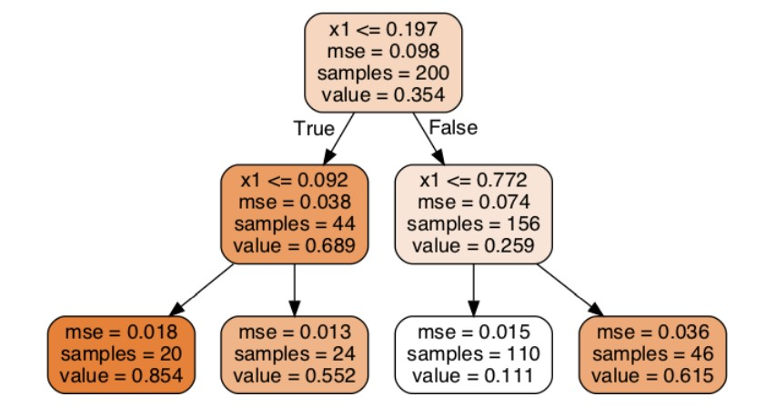
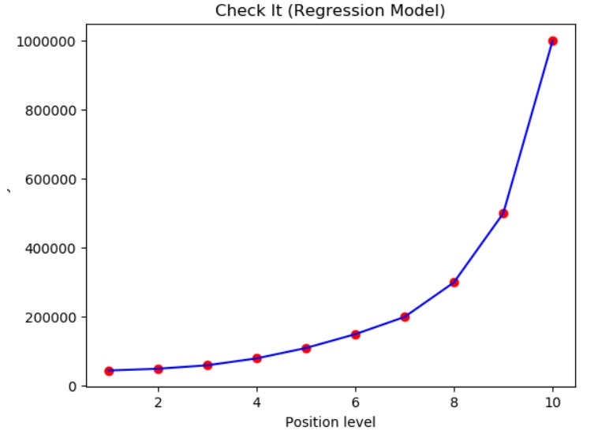
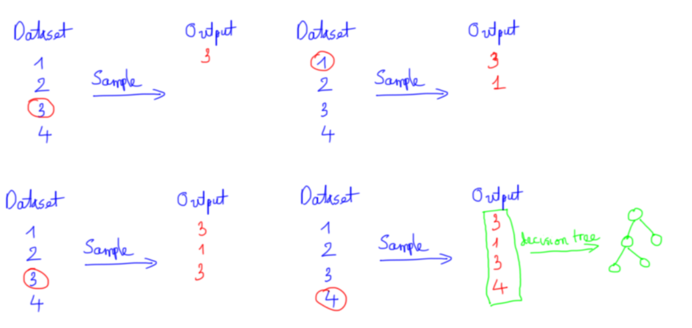

III. Hồi quy(Regression)
Hồi quy khác với phân loại ở điểm nào thì mình có nói ở chương 1 rồi nên mình sẽ không để cập ở đây nữa. Mà tập trung giới thiệu các thuật toán hồi quy phổ biển hay được sử dụng. Nếu nhãn không chia thành các nhóm mà các giá trị thực (có thể vô hạn) thì bài toán đó được gọi là hồi quyNote: Trong bài viết này mình sẽ không đi sâu vào phương trình toán học, đạo hàm, vi phân các thứ mà chủ yếu tập trung vào ý tưởng, Hands-On
1. Hồi quy tuyến tính
- Là một thuật toán thuộc nhóm học có giám sát, ở đó có mối quan hệ đầu vào và đầu ra được mô tả một hàm tuyến tính, có thể nói rằng đây là một thuật toán cơ bản nhất.
- VD: Với bài toán thực tế đó là bài toán ước lượng giá đất, bạn một mảnh đất ở Hương Khê, Hà Tĩnh có diện tích là x và bạn muốn dự đoán giá của mảnh đất này y. Ta cần xây dựng một hàm dự đoán đúng không ?, Đầu vào của bài toán là x và đầu ra là y 1 số vô hướng. Nhận xét theo cách trực quan thì diện tích càng lớn giá đất có giá trị cao, từ đó ta xây dựng một hàm tuyến tính có dạng như sau
- , trong đó: w là các trọng số ta cần tìm, x là vector đầu vào
- Linear hay tuyến tính hiểu một cách đơn giản là thẳng, phẳng. Trong không gian hai chiều, một hàm số được gọi là tuyến tính nếu đồ thị của nó có dạng một đường thẳng. Trong không gian ba chiều, một hàm số được goi là tuyến tính nếu đồ thị của nó có dạng một mặt phẳng. Trong không gian nhiều hơn ba chiều, khái niệm mặt phẳng không còn phù hợp nữa, thay vào đó, một khái niệm khác ra đời được gọi là siêu mặt phẳng (hyperplane). Các hàm số tuyến tính là các hàm đơn giản nhất, vì chúng thuận tiện trong việc hình dung và tính toán.
- Các phương thức đo độ khớp của mô hình với tập dữ liệu: Mean squared error (MSE), Root mean squared error (RMSE), Mean absolute error (MAE): Đo lường khoảng cách giữa 2 vector, vector thực và vector dự đoán
- Thông thường chúng ta hay dùng là MSE:
- Để đi tìm các trọng số w thì ta có thể sử dụng 2 cách: Phương trình pháp tuyến(Đạo hàm bằng 0), Gradient Descent
- (1) Phương trình pháp tuyến:

- (2) Gradient Descent:
 Code
Code
- Hạn chế của Linear Regression là nhạy cảm với nhiễu, nó không biểu diễn được mô hình phức tạp
- Nếu như dữ liệu phức tạp hơn tuyến tính hoặc phi tuyến chúng ta có thể đề cập tới mô hình hồi quy đa thức. ta có thể sử dụng một mô hình tuyến tính để khớp vào dữ liệu phi tuyến. Một cách đơn giản để làm điều này là thêm các bậc lũy thừa của mỗi đặc trưng như là những đặc trưng mới, sau đó huấn luyện một mô hình tuyến tính trên bộ đặc trưng mở rộng này.
- Linear regression là một mô hình đơn giản, lời giải cho phương trình đạo hàm bằng không cũng khá đơn giản. Trong hầu hết các trường hợp, chúng ta không thể giải được phương trình đạo hàm bằng không
- Trên thực tế, một vector đặc trưng có thể có kích thước rất lớn, dẫn đến ma trận XX^T cũng có kích thước lớn và việc tính ma trận nghịch đảo có thể không lợi về mặt tính toán
Code
#Khởi tạo ngẫu nhiên X,y
X = 2 * np.random.rand(100, 1)
y = 4 + 3 * X + np.random.randn(100, 1)
#Chúng ta chèn 1 vào cho dễ tính toán
X_bar = np.concatenate((one,X),axis = 1)
#áp dụng pt pháp tuyến
w = np.linalg.inv(X_bar.T.dot(X_b)).dot(X_b.T).dot(y)
#Dự đoán
X_new = np.array([[0], [2]])
X_bar = np.concatenate((one,X_new),axis = 1)
y_predict = X_new_b.dot(theta_best)
print(y_predict)
def update_weight(X,y,w,step_size,num_iters):
costs = []
for _ in range(num_iters):
y_pr = predict(X,w)
error = y_pr - y
for i in range(len(w)):
devivative = feature_derivative(error,X[:,i])
w[i] = w[i] - step_size * devivative
cost = loss_function(X,y,w)
costs.append(cost)
return w,costs
Trực quan hóa dữ liệu và đường bình phương tối thiểu


Code
from sklearn.preprocessing import PolynomialFeatures
#Tăng lên bậc 2
poly_features = PolynomialFeatures(degree=2, include_bias=False)
X_poly = poly_features.fit_transform(X)
#Traning dữ liệu ban đầu và dữ liệu bậc 2
lin_reg = LinearRegression()
lin_reg.fit(X_poly, y)
lin_reg.predict(X_test)
2. Hồi quy Ridge
- Hồi quy ridge chính là bản tiêu chuẩn của hồi quy tuyến tính, thêm tham số tiêu chuẩn vào hàm mất mát và Hồi quy Ridge giúp chống lại vấn đề overfitting
- Tham số tiêu chuẩn có thể gọi lambda: Khi lambda = 0 thì bài toán sẽ trở về Hồi quy tuyến tính, Khi lambda càng lớn thì các trọng số w có xu hướng không quá lớn. Vì vậy giúp ta có thể kiểm soát được bài toán và tránh đầu ra không quá phụ thuộc bất kỳ đặc trưng nào. Tham số tiêu chuẩn cho Ridge là l2-norm
- Công thức:
- Ta cũng có thể tìm trọng số w theo 2 cách: Phương trình pháp tuyến, Gradient Descent
- (1) Phương trình pháp tuyến:
- (2) Gradient Descent:
Code
#Đạo hàm hàm mất mát ridge
def feature_devivative_ridge(X,w,lambdaa,error,flag):
if flag == True:
return 2* error.dot(X)
return 2* error.dot(X) + 2 * lambdaa * w
#Cập nhật trọng số
def update_weights_ridge(X,y,w,step_size,num_iters,l2_penlaty):
costs = []
for _ in range(num_iters):
y_pr = predict(X,w)
error = y_pr - y
for i in range(len(w)):
if i == 0:
devivative = feature_devivative_ridge(X[:,i],w[i],l2_penlaty,error,True)
else:
devivative = feature_devivative_ridge(X[:,i],w[i],l2_penlaty,error,False)
w[i] = w[i] - step_size * devivative
cost = loss_function_ridge(X,y,w,l2_penlaty)
costs.append(cost)
return w,costs
3. Hồi quy Lasso
- Hồi quy lasso chính là bản tiêu chuẩn của hồi quy tuyến tính, thêm tham số tiêu chuẩn vào hàm mất mát và Hồi quy Lasso giúp chống lại vấn đề overfitting
- Tham số tiêu chuẩn có thể gọi lambda: Khi lambda = 0 thì bài toán sẽ trở về Hồi quy tuyến tính. Khi thêm tham số lambda thì w luôn có xu hướng bằng 0. Vì vậy model Lasso được hay dùng để nén mô hình hoặc lựa chọn đặc trưng. Những trọng số bằng 0 tương ứng đặc trưng đó không được coi trọng còn trọng số khác 0 thì tương ứng quan trọng đóng góp cho kết quả đầu ra. Chuẩn dùng trong Lasso là chuẩn 1(l1-norm).
- Phương trình Lasso:
- Ta cũng có thể dễ thì thấy l1-regularization là đạo hàm của l1-norm không xác định tại 0 (Đạo hàm giá trị tuyến đối). Vì vậy thời gian tìm nghiệm sẽ mất thời gian hơn.
- Chúng ta tìm trọng số w:

Code
#Tính toán w
def lasso_step(i, feature_matrix, output, weights, l1_penalty):
# tính prediction
prediction = predict(feature_matrix,weights)
# tính ro[i] = SUM[ [feature_i]*(output - prediction + weight[i]*[feature_i]) ]
ro_i = np.sum(feature_matrix[:,i]@(output - prediction + weights[i]*(feature_matrix[:,i])))
if i == 0: # intercept -- không điều chuẩn
new_weight_i = ro_i
elif ro_i < -l1_penalty/2.:
new_weight_i = ro_i + (l1_penalty / 2)
elif ro_i > l1_penalty/2.:
new_weight_i = ro_i - (l1_penalty/2)
else:
new_weight_i = 0.
return new_weight_i
#Hàm chi phí
def loss_function_lasso(X,y,w,l1_penalty):
return np.sum((y - predict(X,w))**2) + l1_penalty * np.sum((w))
#Cập nhật
def update_weights_lasso(feature_matrix, output, initial_weights, l1_penalty, tolerance):
m,n = feature_matrix.shape
weights = np.array(initial_weights.copy())
converged = False
while not converged:
change = []
for i in range(n):
old_weights_i = weights[i]
weights[i] = lasso_step(i,feature_matrix,output,weights,l1_penalty)
change_weight = abs(old_weights_i - weights[i])
change.append(change_weight)
if max(change) < tolerance:
converged = True
return weights
4. Support Vector Regression

Hình ảnh minh họa về SVR
- Là một thuật toán supervised learning được sử dụng để dự đoán các giá trị rời rạc/liên tục, SVR nó cũng giống giống SVMs. Ý tưởng cơ bản là tìm đường tốt nhất, đường tốt nhất là một mặt phẳng có số điểm tối đa.
- Không giống các regression model là cố gắng tối ưu chi phí lỗi giữa giá trị thực và giá trị dự đoán, còn SVR là cố gắng tối ưu đường tốt nhất trong 1 giá trị ngưỡng, giá trị ngưỡng ở đây chỉ là khoảng cách giữa siêu mặt phẳng và biên.
- Hồi quy SVM cố gắng khớp càng nhiều mẫu nằm trong con đường càng tốt đồng thời hạn chế việc vi phạm biên (tức hạn chế mẫu nằm ngoài con đường). Độ rộng của con đường được kiểm soát bằng siêu tham số
- SVM có thể giải quyết bài toán tuyến tính hoặc phi tuyến, với trường hợp phi tuyến thì chúng ta sử dụng mô hình svm hạt nhân, ta sẽ nói mô hình hạt nhân kĩ hơn ở chương 3.
- Ưu điểm: Mạnh mẽ với các giá trị outlier, dễ dàng triển khai, mô hình quyết định có thể cập nhật dễ dàng, Khả năng khái quát tuyệt vời và cho độ chính xác cao
- Nhược điểm: Không phù hợp với những tập dataset lớn, Nếu số lượng đặc trưng của điểm dữ liệu vượt quá số lượng mẫu đào tạo, SVM sẽ hoạt động kém, Mô hình quyết định sẽ hoạt động tốt nếu có nhiều nhiễu

Code
Hình ảnh mô tả mô hình với biên lớn (c = 1.5) và mô hình với biên nhỏ (c = 0.5).
N = 1000
def makeData(x):
r = [a/10 for a in x]
y = np.sin(x)+np.random.uniform(-.5, .2, len(x))
return np.array(y+r)
x = [i/100 for i in range(N)]
y = makeData(x)
x = np.array(x).reshape(-1,1)
plt.scatter(x, y, s=5, color="blue")
plt.show()
svr = SVR().fit(x, y)
print(svr)
yfit = svr.predict(x)
plt.scatter(x, y, s=5, color="blue", label="original")
plt.plot(x, yfit, lw=2, color="red", label="fitted")
plt.legend()
plt.show()
5. Decision Tree Regression
- Decision tree là 1 thuật toán thuộc nhóm supervised learing, thuật toán này có thể sử dụng trong 2 bài toán là classification và regression
- Việc xây dựng thuật toán dự trên tập dữ liệu huấn luyện cho trước là việc đi xác định các câu hỏi và thứ tự của chúng.
- Điểm đặc biệt đó là thuật toán có thể làm việc với biến categorical thường rời rạc không thứ tự. Decision tree cũng làm việc với dữ liệu có vector đặc trưng bao gồm cả 2 thuộc tính categorical và numberic. Dữ liệu cũng ko cần chuẩn hóa dữ liệu khi đưa vào huấn luyện
- Trong bài toán hồi quy trong cây quyết định thì chúng ta sẽ đi thỏa luận về thuật toán CART: Thuật toán này có thể thực hiện 2 nhiệm vụ hồi quy hoặc phân loại
- Thuật toán CART hoạt động như sau:
- Bước 1: Tạo 1 cây rỗng nhị phân
- Bước 2: Lựa chọn đặc trưng để chia nhỏ
- Bước 3: Nếu có không có câu hỏi nào nữa đưa ra dự đoán
- Bước 4: Đệ quy lại từ bước 2 đi
- Ta có thể thấy có 2 vấn đề cần giải quyết trong thuật toán này đó là (1) lựa chọn đặc trưng và (2) khi nào là dừng đệ quy
- (1) Lựa chọn đặc trưng: Để giải quyết vấn đề này chúng ta tính chi phí lỗi MSE (Độ hỗn tạp) chúng ta sẽ dựa vào chi phí MSE này mà lựa chọn đặc trưng sao cho phù hợp. Nó sẽ tính từ nút gốc đi rồi tính các nút trung gian, chi phí lỗi của đặc trưng được chia đó nhỏ nhất thì chọn đặc trưng đó.
- (2) Dừng đệ quy: Khi đạt tới giới hạn yêu cầu, tham số max_depth trong cây thực nhiệm vụ này. Hoặc chia cây để khi nào không chia được nữa.
- Cây quyết định dễ bị overfit, bởi vì overfit xảy ra khi bạn thiết kế cây quá hoản hảo khớp với dữ liệu traning, thiết kế cây hoản hảo là bạn tăng chiều sâu cây lên làm cho mô hình học quá các chi tiết.
- Cây quyết định không đặt giả định về dữ liệu huấn luyện (ngược lại với các mô hình tuyến tính). Nếu ko có ràng buộc thì thuật toán sẽ thích ứng với dữ liệu quá mức. Mô hình như này thường đường gọi là mô hình phi tham số, không phải là không có tham số mà nó số lượng tham số ko tham gia quyết định trước khi huấn luyện mà để mô hình khớp dữ liệu 1 các tự do. Để tránh vấn overfit ta cần đặt ràng buộc thì việc này như chúng ta đã biết đó là tiêu chuẩn Code
- Để giải quyết vấn đề overfitting chúng ta có thể điều chỉnh việc chia cây hoặc chặt cây (pruning), phương pháp pruning cây đơn giản nhưng rất hiểu quả, nó làm việc trên mỗi nút lá, tính toán và đánh giá hiệu suất bằng cách sử dụng bộ thử nghiệm giữ lại.

Cây quyết định hồi quy
#1 Importing the libraries
import numpy as np
import matplotlib.pyplot as plt
import pandas as pd
dataset = pd.read_csv('Position_Salaries.csv')
X = dataset.iloc[:, 1:2].values
y = dataset.iloc[:, 2].values
# Create the Decision Tree regressor object here
from sklearn.tree import DecisionTreeRegressor
regressor = DecisionTreeRegressor(random_state=0)
regressor.fit(X,y)
y_pred = regressor.predict(5.5)
plt.scatter(X, y, color = 'red')
plt.plot(X, regressor.predict(X), color = 'blue')
plt.title('Check It (Regression Model)')
plt.xlabel('Position level')
plt.ylabel('Salary')
plt.show()

Đầu ra của bài code ở trên
6. RandomForestRegressor

Mô hình RandomForest
- Trước khi nói đến Randomforest chúng ta cần nói đến Ensemble learing: là kỹ thuật học với nhiều thuật toán kết hợp với nhau hoặc có thể nói là ta có thể đào tào với nhiều thuật toán ML và kết hợp các dự đoán của chúng theo nào đó. Cách tiếp cận như này có xu hướng đưa ra kết quả dự đoán tốt hơn, Mô hình emsemble là sự kết hợp nhiều mô hình cơ bản lại
- Trong emsemble learning có 3 loại: Bootsting, Bagging, Stacking
- Mô hình randomforest dựa trên mô hình emsemble để xây dựng và sử dụng kỹ thuật Bagging, kỹ thuật này sẽ tính toán chạy song song không có sự tương tác giữa các cây
- Random forest là thuật toán thuộc nhóm thuật toán supervised learing, có sử dụng trong 2 bài toán là classification và regression
- Ý tưởng chung của thuật toán: Là sự kết hợp nhiều cây quyết định (Decision tree), tuy nhiên với mỗi cây quyết định đều có tính ngẫu nhiên sau đó kết quả dự đoán là sự kết hợp của nhiều cây
- Xây dựng thuật toán cho bài toán hồi quy thì các bước triển khai vẫn như vậy, chỉ khác đầu ra của bài toán là giá trị liên tục, nó sẽ được tính trung bình các điểm đầu ra.
- Xây dựng thuật toán Random forest regression
- Chúng ta chuẩn bị dữ liệu: Ta sẽ lấy ngẫu nhiên n dữ liệu từ bộ dữ liệu, kỹ thuật này được gọi là boottrapping. Tức là ta lấy sample từ bộ dữ liệu không vứt nó đi mà vẫn để lại ở dữ liệu ban đầu đến khi chúng ta chia đủ n dữ liệu, n tập dữ liệu được lấy này có thể trùng nhau
- Sau khi đủ n dữ liệu thì ta tiếp lấy ngẫu nhiên k thuộc tính (k < n). Dữ liệu mới đủ n dữ liệu đủ k thuộc tính
- Mỗi bộ dữ liệu với k thuộc tính chúng ta sẽ xây dựng mỗi mô hình decision tree con
- Qúa trình xây dựng thuật toán decision tree dựa trên ngẫu nhiên nên kết quả các cây trong thuật toán Randomforset đều khác nhau.
- Kết quả cuối cùng chính là sự kết hợp của tất cả cây quyết định được đào tạo trước đó

VD: Việc lấy n dữ liệu ngẫu nhiên